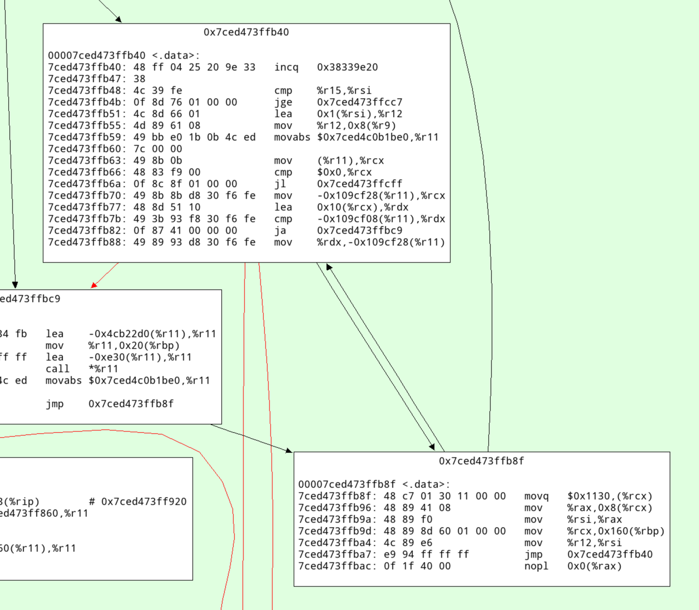
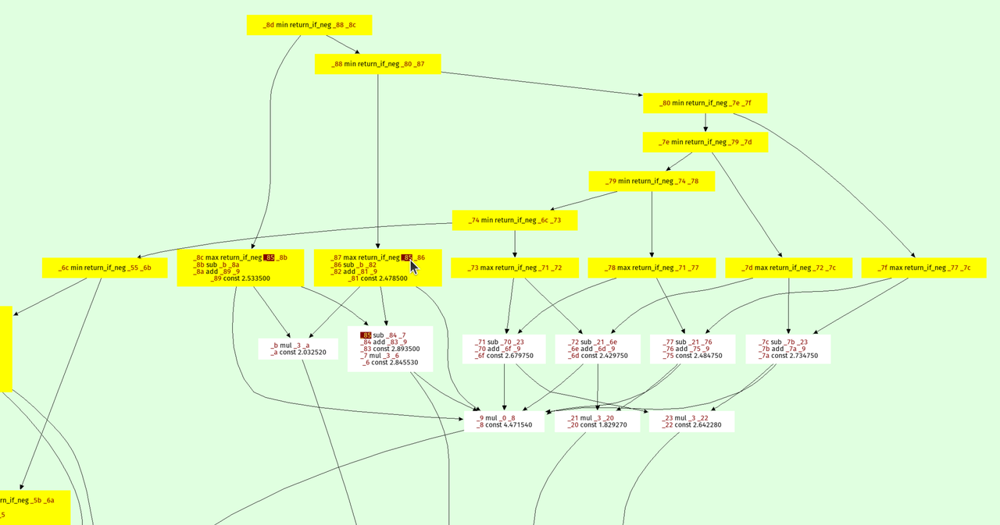
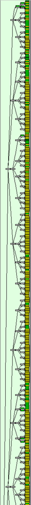
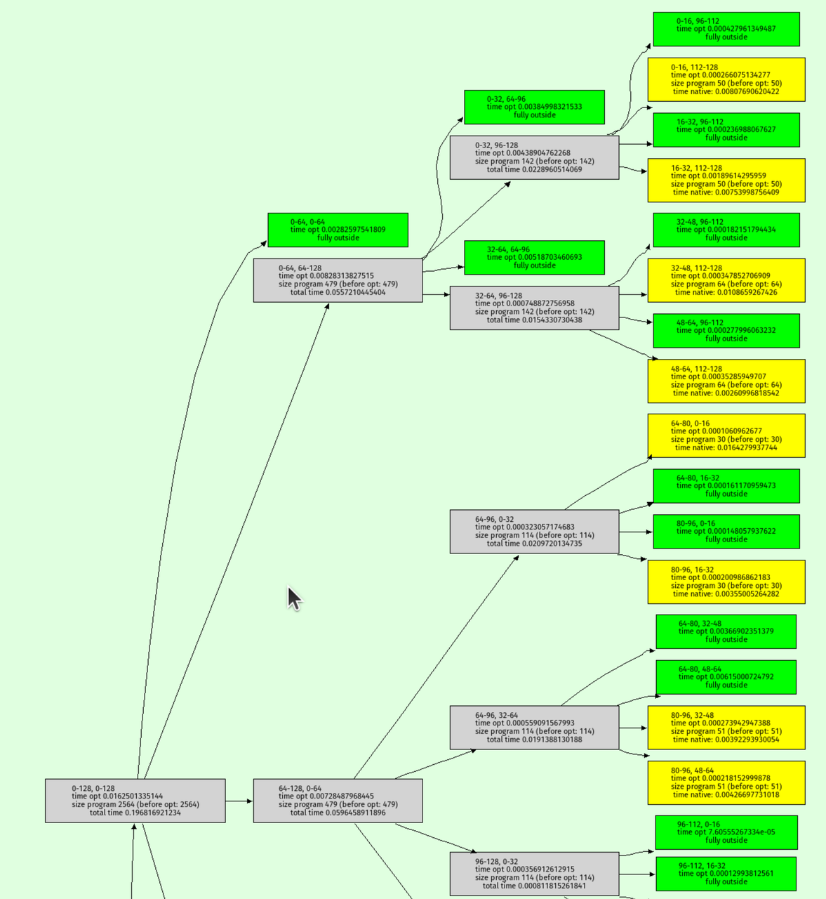

How fast can the RPython GC allocate?
While working on a paper about allocation profiling in VMProf I got curious about how quickly the RPython GC can allocate an object. I wrote a small RPython benchmark program to get an idea of the order of magnitude.
The basic idea is to just allocate an instance in a tight loop:
class A(object): pass def run(loops): # preliminary idea, see below for i in range(loops): a = A() a.i = i
The RPython type inference will find out that instances of A have a single
i field, which is an integer. In addition to that field, every RPython object
needs one word of GC meta-information. Therefore one instance of A needs 16
bytes on a 64-bit architecture.
However, measuring like this is not good enough, because the RPython static optimizer would remove the allocation since the object isn't used. But we can confuse the escape analysis sufficiently by always keeping two instances alive at the same time:
class A(object): pass def run(loops): a = prev = None for i in range(loops): prev = a a = A() a.i = i print(prev, a) # print the instances at the end
(I confirmed that the allocation isn't being removed by looking at the C code that the RPython compiler generates from this.)
This is doing a little bit more work than needed, because of the a.i = i
instance attribute write. We can also (optionally) leave the field
uninitialized.
def run(initialize_field, loops): t1 = time.time() if initialize_field: a = prev = None for i in range(loops): prev = a a = A() a.i = i print(prev, a) # make sure always two objects are alive else: a = prev = None for i in range(loops): prev = a a = A() print(prev, a) t2 = time.time() print(t2 - t1, 's') object_size_in_words = 2 # GC header, one integer field mem = loops * 8 * object_size_in_words / 1024.0 / 1024.0 / 1024.0 print(mem, 'GB') print(mem / (t2 - t1), 'GB/s')
Then we need to add some RPython scaffolding:
def main(argv): loops = int(argv[1]) with_init = bool(int(argv[2])) if with_init: print("with initialization") else: print("without initialization") run(with_init, loops) return 0 def target(*args): return main
To build a binary:
pypy rpython/bin/rpython targetallocatealot.py
Which will turn the RPython code into C code and use a C compiler to turn that into a binary, containing both our code above as well as the RPython garbage collector.
Then we can run it (all results again from my AMD Ryzen 7 PRO 7840U, running Ubuntu Linux 24.04.2):
$ ./targetallocatealot-c 1000000000 0 without initialization <A object at 0x7c71ad84cf60> <A object at 0x7c71ad84cf70> 0.433825 s 14.901161 GB 34.348322 GB/s $ ./targetallocatealot-c 1000000000 1 with initialization <A object at 0x71b41c82cf60> <A object at 0x71b41c82cf70> 0.501856 s 14.901161 GB 29.692100 GB/s
Let's compare it with the Boehm GC:
$ pypy rpython/bin/rpython --gc=boehm --output=targetallocatealot-c-boehm targetallocatealot.py ... $ ./targetallocatealot-c-boehm 1000000000 0 without initialization <A object at 0xffff8bd058a6e3af> <A object at 0xffff8bd058a6e3bf> 9.722585 s 14.901161 GB 1.532634 GB/s $ ./targetallocatealot-c-boehm 1000000000 1 with initialization <A object at 0xffff88e1132983af> <A object at 0xffff88e1132983bf> 9.684149 s 14.901161 GB 1.538717 GB/s
This is not a fair comparison, because the Boehm GC uses conservative stack scanning, therefore it cannot move objects, which requires much more complicated allocation.
Let's look at perf stats
We can use perf to get some statistics about the executions:
$ perf stat -e cache-references,cache-misses,cycles,instructions,branches,faults,migrations ./targetallocatealot-c 10000000000 0 without initialization <A object at 0x7aa260e35980> <A object at 0x7aa260e35990> 4.301442 s 149.011612 GB 34.642245 GB/s Performance counter stats for './targetallocatealot-c 10000000000 0': 7,244,117,828 cache-references 23,446,661 cache-misses # 0.32% of all cache refs 21,074,240,395 cycles 110,116,790,943 instructions # 5.23 insn per cycle 20,024,347,488 branches 1,287 faults 24 migrations 4.303071693 seconds time elapsed 4.297557000 seconds user 0.003998000 seconds sys $ perf stat -e cache-references,cache-misses,cycles,instructions,branches,faults,migrations ./targetallocatealot-c 10000000000 1 with initialization <A object at 0x77ceb0235980> <A object at 0x77ceb0235990> 5.016772 s 149.011612 GB 29.702688 GB/s Performance counter stats for './targetallocatealot-c 10000000000 1': 7,571,461,470 cache-references 241,915,266 cache-misses # 3.20% of all cache refs 24,503,497,532 cycles 130,126,387,460 instructions # 5.31 insn per cycle 20,026,280,693 branches 1,285 faults 21 migrations 5.019444749 seconds time elapsed 5.012924000 seconds user 0.005999000 seconds sys
This is pretty cool, we can run this loop with >5 instructions per cycle. Every
allocation takes 110116790943 / 10000000000 ≈ 11 instructions and
21074240395 / 10000000000 ≈ 2.1 cycles, including the loop around it.
How often does the GC run?
The RPython GC queries the L2 cache size to determine the size of the nursery.
We can find out what it is by turning on PYPYLOG, selecting the proper logging
categories, and printing to stdout via :-:
$ PYPYLOG=gc-set-nursery-size,gc-hardware:- ./targetallocatealot-c 1 1 [f3e6970465723] {gc-set-nursery-size nursery size: 270336 [f3e69704758f3] gc-set-nursery-size} [f3e697047b9a1] {gc-hardware L2cache = 1048576 [f3e69705ced19] gc-hardware} [f3e69705d11b5] {gc-hardware memtotal = 32274210816.000000 [f3e69705f4948] gc-hardware} [f3e6970615f78] {gc-set-nursery-size nursery size: 4194304 [f3e697061ecc0] gc-set-nursery-size} with initialization NULL <A object at 0x7fa7b1434020> 0.000008 s 0.000000 GB 0.001894 GB/s
So the nursery is 4 MiB. This means that when we allocate 14.9 GiB the GC needs to perform 10000000000 * 16 / 4194304 ≈ 38146 minor collections. Let's confirm that:
$ PYPYLOG=gc-minor:out ./targetallocatealot-c 10000000000 1 with initialization w<A object at 0x7991e3835980> <A object at 0x7991e3835990> 5.315511 s 149.011612 GB 28.033356 GB/s $ head out [f3ee482f4cd97] {gc-minor [f3ee482f53874] {gc-minor-walkroots [f3ee482f54117] gc-minor-walkroots} minor collect, total memory used: 0 number of pinned objects: 0 total size of surviving objects: 0 time taken: 0.000029 [f3ee482f67b7e] gc-minor} [f3ee4838097c5] {gc-minor [f3ee48380c945] {gc-minor-walkroots $ grep "{gc-minor-walkroots" out | wc -l 38147
Each minor collection is very quick, because a minor collection is O(surviving objects), and in this program only one object survive each time (the other instance is in the process of being allocated). Also, the GC root shadow stack is only one entry, so walking that is super quick as well. The time the minor collections take is logged to the out file:
$ grep "time taken" out | tail time taken: 0.000002 time taken: 0.000002 time taken: 0.000002 time taken: 0.000002 time taken: 0.000002 time taken: 0.000002 time taken: 0.000002 time taken: 0.000003 time taken: 0.000002 time taken: 0.000002 $ grep "time taken" out | grep -o "0.*" | numsum 0.0988160000000011
(This number is super approximate due to float formatting rounding.)
that means that 0.0988160000000011 / 5.315511 ≈ 2% of the time is spent in the GC.
What does the generated machine code look like?
The allocation fast path of the RPython GC is a simple bump pointer, in Python pseudo-code it would look roughly like this:
result = gc.nursery_free # Move nursery_free pointer forward by totalsize gc.nursery_free = result + totalsize # Check if this allocation would exceed the nursery if gc.nursery_free > gc.nursery_top: # If it does => collect the nursery and al result = collect_and_reserve(totalsize) result.hdr = <GC flags and type id of A>
So we can disassemble the compiled binary targetallocatealot-c and try to
find the equivalent logic in machine code. I'm super bad at reading machine
code, but I tried to annotate what I think is the core loop (the version
without initializing the i field) below:
... cb68: mov %rbx,%rdi cb6b: mov %rdx,%rbx # initialize object header of object allocated in previous iteration cb6e: movq $0x4c8,(%rbx) # loop termination check cb75: cmp %rbp,%r12 cb78: je ccb8 # load nursery_free cb7e: mov 0x33c13(%rip),%rdx # increment loop counter cb85: add $0x1,%rbp # add 16 (size of object) to nursery_free cb89: lea 0x10(%rdx),%rax # compare nursery_top with new nursery_free cb8d: cmp %rax,0x33c24(%rip) # store new nursery_free cb94: mov %rax,0x33bfd(%rip) # if new nursery_free exceeds nursery_top, fall through to slow path, if not, start at top cb9b: jae cb68 # slow path from here on: # save live object from last iteration to GC shadow stack cb9d: mov %rbx,-0x8(%rcx) cba1: mov %r13,%rdi cba4: mov $0x10,%esi # do minor collection cba9: call 20800 <pypy_g_IncrementalMiniMarkGC_collect_and_reserve> ...
Running the benchmark as regular Python code
So far we ran this code as RPython, i.e. type inference is performed and the program is translated to a C binary. We can also run it on top of PyPy, as a regular Python3 program. However, an instance of a user-defined class in regular Python when run on PyPy is actually a much larger object, due to dynamic typing. It's at least 7 words, which is 56 bytes.
However, we can simply use int objects instead. Integers are allocated on the
heap and consist of two words, one for the GC and one with the
machine-word-sized integer value, if the integer fits into a signed 64-bit
representation (otherwise a less compact different representation is used,
which can represent arbitrarily large integers).
Therefore, we can simply use this kind of code:
import sys, time def run(loops): t1 = time.time() a = prev = None for i in range(loops): prev = a a = i print(prev, a) # make sure always two objects are alive t2 = time.time() object_size_in_words = 2 # GC header, one integer field mem = loops * 28 / 1024.0 / 1024.0 / 1024.0 print(mem, 'GB') print(mem / (t2 - t1), 'GB/s') def main(argv): loops = int(argv[1]) run(loops) return 0 if __name__ == '__main__': sys.exit(main(sys.argv))
In this case we can't really leave the value uninitialized though.
We can run this both with and without the JIT:
$ pypy3 allocatealot.py 1000000000 999999998 999999999 14.901161193847656 GB 17.857494904899553 GB/s $ pypy3 --jit off allocatealot.py 1000000000 999999998 999999999 14.901161193847656 GB 0.8275382375297171 GB/s
This is obviously much less efficient than the C code, the PyPy JIT generates much less efficient machine code than GCC. Still, "only" twice as slow is kind of cool anyway.
(Running it with CPython doesn't really make sense for this measurements, since
CPython ints are bigger – sys.getsizeof(5) reports 28 bytes.)
The machine code that the JIT generates
Unfortunately it's a bit of a journey to show the machine code that PyPy's JIT generates for this. First we need to run with all jit logging categories:
$ PYPYLOG=jit:out pypy3 allocatealot.py 1000000000
Then we can read the log file to find the trace IR for the loop under the logging category jit-log-opt:
+532: label(p0, p1, p6, p9, p11, i34, p13, p19, p21, p23, p25, p29, p31, i44, i35, descr=TargetToken(137358545605472)) debug_merge_point(0, 0, 'run;/home/cfbolz/projects/gitpypy/allocatealot.py:6-9~#24 FOR_ITER') # are we at the end of the loop +552: i45 = int_lt(i44, i35) +555: guard_true(i45, descr=<Guard0x7ced4756a160>) [p0, p6, p9, p11, p13, p19, p21, p23, p25, p29, p31, p1, i44, i35, i34] +561: i47 = int_add(i44, 1) debug_merge_point(0, 0, 'run;/home/cfbolz/projects/gitpypy/allocatealot.py:6-9~#26 STORE_FAST') debug_merge_point(0, 0, 'run;/home/cfbolz/projects/gitpypy/allocatealot.py:6-10~#28 LOAD_FAST') debug_merge_point(0, 0, 'run;/home/cfbolz/projects/gitpypy/allocatealot.py:6-10~#30 STORE_FAST') debug_merge_point(0, 0, 'run;/home/cfbolz/projects/gitpypy/allocatealot.py:6-11~#32 LOAD_FAST') debug_merge_point(0, 0, 'run;/home/cfbolz/projects/gitpypy/allocatealot.py:6-11~#34 STORE_FAST') debug_merge_point(0, 0, 'run;/home/cfbolz/projects/gitpypy/allocatealot.py:6-11~#36 JUMP_ABSOLUTE') # update iterator object +565: setfield_gc(p25, i47, descr=<FieldS pypy.module.__builtin__.functional.W_IntRangeIterator.inst_current 8>) +569: guard_not_invalidated(descr=<Guard0x7ced4756a1b0>) [p0, p6, p9, p11, p19, p21, p23, p25, p29, p31, p1, i44, i34] # check for signals +569: i49 = getfield_raw_i(137358624889824, descr=<FieldS pypysig_long_struct_inner.c_value 0>) +582: i51 = int_lt(i49, 0) +586: guard_false(i51, descr=<Guard0x7ced4754db78>) [p0, p6, p9, p11, p19, p21, p23, p25, p29, p31, p1, i44, i34] debug_merge_point(0, 0, 'run;/home/cfbolz/projects/gitpypy/allocatealot.py:6-9~#24 FOR_ITER') # allocate the integer (allocation sunk to the end of the trace) +592: p52 = new_with_vtable(descr=<SizeDescr 16>) +630: setfield_gc(p52, i34, descr=<FieldS pypy.objspace.std.intobject.W_IntObject.inst_intval 8 pure>) +634: jump(p0, p1, p6, p9, p11, i44, p52, p19, p21, p23, p25, p29, p31, i47, i35, descr=TargetToken(137358545605472))
To find the machine code address of the trace, we need to search for this line:
Loop 1 (run;/home/cfbolz/projects/gitpypy/allocatealot.py:6-9~#24 FOR_ITER) \ has address 0x7ced473ffa0b to 0x7ced473ffbb0 (bootstrap 0x7ced473ff980)
Then we can use a script in the PyPy repo to disassemble the generated machine code:
$ pypy rpython/jit/backend/tool/viewcode.py out
This will dump all the machine code to stdout, and open a pygame-based graphviz cfg. In there we can search for the address and see this:

Here's an annotated version with what I think this code does:
# increment the profile counter 7ced473ffb40: 48 ff 04 25 20 9e 33 incq 0x38339e20 7ced473ffb47: 38 # check whether the loop is done 7ced473ffb48: 4c 39 fe cmp %r15,%rsi 7ced473ffb4b: 0f 8d 76 01 00 00 jge 0x7ced473ffcc7 # increment iteration variable 7ced473ffb51: 4c 8d 66 01 lea 0x1(%rsi),%r12 # update iterator object 7ced473ffb55: 4d 89 61 08 mov %r12,0x8(%r9) # check for ctrl-c/thread switch 7ced473ffb59: 49 bb e0 1b 0b 4c ed movabs $0x7ced4c0b1be0,%r11 7ced473ffb60: 7c 00 00 7ced473ffb63: 49 8b 0b mov (%r11),%rcx 7ced473ffb66: 48 83 f9 00 cmp $0x0,%rcx 7ced473ffb6a: 0f 8c 8f 01 00 00 jl 0x7ced473ffcff # load nursery_free pointer 7ced473ffb70: 49 8b 8b d8 30 f6 fe mov -0x109cf28(%r11),%rcx # add size (16) 7ced473ffb77: 48 8d 51 10 lea 0x10(%rcx),%rdx # compare against nursery top 7ced473ffb7b: 49 3b 93 f8 30 f6 fe cmp -0x109cf08(%r11),%rdx # jump to slow path if nursery is full 7ced473ffb82: 0f 87 41 00 00 00 ja 0x7ced473ffbc9 # store new value of nursery free 7ced473ffb88: 49 89 93 d8 30 f6 fe mov %rdx,-0x109cf28(%r11) # initialize GC header 7ced473ffb8f: 48 c7 01 30 11 00 00 movq $0x1130,(%rcx) # initialize integer field 7ced473ffb96: 48 89 41 08 mov %rax,0x8(%rcx) 7ced473ffb9a: 48 89 f0 mov %rsi,%rax 7ced473ffb9d: 48 89 8d 60 01 00 00 mov %rcx,0x160(%rbp) 7ced473ffba4: 4c 89 e6 mov %r12,%rsi 7ced473ffba7: e9 94 ff ff ff jmp 0x7ced473ffb40 7ced473ffbac: 0f 1f 40 00 nopl 0x0(%rax)
Conclusion
The careful design of the RPython GC's allocation fast path gives pretty good allocation rates. This technique isn't really new, it's a pretty typical way to design a GC. Apart from that, my main conclusion would be that computers are fast or something? Indeed, when we ran the same code on my colleague's two-year-old AMD, we got quite a bit worse results, so a lot of the speed seems to be due to the hard work of CPU architects.
Doing the Prospero-Challenge in RPython
Recently I had a lot of fun playing with the Prospero Challenge by Matt Keeter. The challenge is to render a 1024x1024 image of a quote from The Tempest by Shakespeare. The input is a mathematical formula with 7866 operations, which is evaluated once per pixel.
What made the challenge particularly enticing for me personally was the fact that the formula is basically a trace in SSA-form – a linear sequence of operations, where every variable is assigned exactly once. The challenge is to evaluate the formula as fast as possible. I tried a number of ideas how to speed up execution and will talk about them in this somewhat meandering post. Most of it follows Matt's implementation Fidget very closely. There are two points of difference:
- I tried to add more peephole optimizations, but they didn't end up helping much.
- I implemented a "demanded information" optimization that removes a lot of operations by only keeping the sign of the result. This optimization ended up being useful.
Most of the prototyping in this post was done in RPython (a statically typable subset of Python2, that can be compiled to C), but I later rewrote the program in C to get better performance. All the code can be found on Github.
Input program
The input program is a sequence of operations, like this:
_0 const 2.95 _1 var-x _2 const 8.13008 _3 mul _1 _2 _4 add _0 _3 _5 const 3.675 _6 add _5 _3 _7 neg _6 _8 max _4 _7 ...
The first column is the name of the result variable, the second column is the
operation, and the rest are the arguments to the operation. var-x is a
special operation that returns the x-coordinate of the pixel being rendered,
and equivalently for var-y the y-coordinate. The sign of the result gives the
color of the pixel, the absolute value is not important.
A baseline interpreter
To run the program, I first parse them and replace the register names with indexes, to avoid any dictionary lookups at runtime. Then I implemented a simple interpreter for the SSA-form input program. The interpreter is a simple register machine, where every operation is executed in order. The result of the operation is stored into a list of results, and the next operation is executed. This was the slow baseline implementation of the interpreter but it's very useful to compare against the optimized versions.
This is roughly what the code looks like
class DirectFrame(object): def __init__(self, program): self.program = program self.next = None def run_floats(self, x, y, z): self.setxyz(x, y, z) return self.run() def setxyz(self, x, y, z): self.x = x self.y = y self.z = z def run(self): program = self.program num_ops = program.num_operations() floatvalues = [0.0] * num_ops for op in range(num_ops): func, arg0, arg1 = program.get_func_and_args(op) if func == OPS.const: floatvalues[op] = program.consts[arg0] continue farg0 = floatvalues[arg0] farg1 = floatvalues[arg1] if func == OPS.var_x: res = self.x elif func == OPS.var_y: res = self.y elif func == OPS.var_z: res = self.z elif func == OPS.add: res = self.add(farg0, farg1) elif func == OPS.sub: res = self.sub(farg0, farg1) elif func == OPS.mul: res = self.mul(farg0, farg1) elif func == OPS.max: res = self.max(farg0, farg1) elif func == OPS.min: res = self.min(farg0, farg1) elif func == OPS.square: res = self.square(farg0) elif func == OPS.sqrt: res = self.sqrt(farg0) elif func == OPS.exp: res = self.exp(farg0) elif func == OPS.neg: res = self.neg(farg0) elif func == OPS.abs: res = self.abs(farg0) else: assert 0 floatvalues[op] = res return self.floatvalues[num_ops - 1] def add(self, arg0, arg1): return arg0 + arg1 def sub(self, arg0, arg1): return arg0 - arg1 def mul(self, arg0, arg1): return arg0 * arg1 def max(self, arg0, arg1): return max(arg0, arg1) def min(self, arg0, arg1): return min(arg0, arg1) def square(self, arg0): val = arg0 return val*val def sqrt(self, arg0): return math.sqrt(arg0) def exp(self, arg0): return math.exp(arg0) def neg(self, arg0): return -arg0 def abs(self, arg0): return abs(arg0)
Running the naive interpreter on the prospero image file is super slow, since it performs 7866 * 1024 * 1024 float operations, plus the interpretation overhead.
Using Quadtrees to render the picture
The approach that Matt describes in his really excellent talk is to use quadtrees: recursively subdivide the image into quadrants, and evaluate the formula in each quadrant. For every quadrant you can simplify the formula by doing a range analysis. After a few recursion steps, the formula becomes significantly smaller, often only a few hundred or a few dozen operations.
At the bottom of the recursion you either reach a square where the range analysis reveals that the sign for all pixels is determined, then you can fill in all the pixels of the quadrant. Or you can evaluate the (now much simpler) formula in the quadrant by executing it for every pixel.
This is an interesting use case of JIT compiler/optimization techniques, requiring the optimizer itself to execute really quickly since it is an essential part of the performance of the algorithm. The optimizer runs literally hundreds of times to render a single image. If the algorithm is used for 3D models it becomes even more crucial.
Writing a simple optimizer
Implementing the quadtree recursion is straightforward. Since the program has no control flow the optimizer is very simple to write. I've written a couple of blog posts on how to easily write optimizers for linear sequences of operations, and I'm using the approach described in these Toy Optimizer posts. The interval analysis is basically an abstract interpretation of the operations. The optimizer does a sequential forward pass over the input program. For every operation, the output interval is computed. The optimizer also performs optimizations based on the computed intervals, which helps in reducing the number of operations executed (I'll talk about this further down).
Here's a sketch of the Python code that does the optimization:
class Optimizer(object): def __init__(self, program): self.program = program num_operations = program.num_operations() self.resultops = ProgramBuilder(num_operations) self.intervalframe = IntervalFrame(self.program) # old index -> new index self.opreplacements = [0] * num_operations self.index = 0 def get_replacement(self, op): return self.opreplacements[op] def newop(self, func, arg0=0, arg1=0): return self.resultops.add_op(func, arg0, arg1) def newconst(self, value): const = self.resultops.add_const(value) self.intervalframe.minvalues[const] = value self.intervalframe.maxvalues[const] = value #self.seen_consts[value] = const return const def optimize(self, a, b, c, d, e, f): program = self.program self.intervalframe.setxyz(a, b, c, d, e, f) numops = program.num_operations() for index in range(numops): newop = self._optimize_op(index) self.opreplacements[index] = newop return self.opreplacements[numops - 1] def _optimize_op(self, op): program = self.program intervalframe = self.intervalframe func, arg0, arg1 = program.get_func_and_args(op) assert arg0 >= 0 assert arg1 >= 0 if func == OPS.var_x: minimum = intervalframe.minx maximum = intervalframe.maxx return self.opt_default(OPS.var_x, minimum, maximum) if func == OPS.var_y: minimum = intervalframe.miny maximum = intervalframe.maxy return self.opt_default(OPS.var_y, minimum, maximum) if func == OPS.var_z: minimum = intervalframe.minz maximum = intervalframe.maxz return self.opt_default(OPS.var_z, minimum, maximum) if func == OPS.const: const = program.consts[arg0] return self.newconst(const) arg0 = self.get_replacement(arg0) arg1 = self.get_replacement(arg1) assert arg0 >= 0 assert arg1 >= 0 arg0minimum = intervalframe.minvalues[arg0] arg0maximum = intervalframe.maxvalues[arg0] arg1minimum = intervalframe.minvalues[arg1] arg1maximum = intervalframe.maxvalues[arg1] if func == OPS.neg: return self.opt_neg(arg0, arg0minimum, arg0maximum) if func == OPS.min: return self.opt_min(arg0, arg1, arg0minimum, arg0maximum, arg1minimum, arg1maximum) ... def opt_default(self, func, minimum, maximum, arg0=0, arg1=0): self.intervalframe._set(newop, minimum, maximum) return newop def opt_neg(self, arg0, arg0minimum, arg0maximum): # peephole rules go here, see below minimum, maximum = self.intervalframe._neg(arg0minimum, arg0maximum) return self.opt_default(OPS.neg, minimum, maximum, arg0) @symmetric def opt_min(self, arg0, arg1, arg0minimum, arg0maximum, arg1minimum, arg1maximum): # peephole rules go here, see below minimum, maximum = self.intervalframe._max(arg0minimum, arg0maximum, arg1minimum, arg1maximum) return self.opt_default(OPS.max, minimum, maximum, arg0, arg1) ...
The resulting optimized traces are then simply interpreted at the bottom of the quadtree recursion. Matt talks about also generating machine code from them, but when I tried to use PyPy's JIT for that it was way too slow at producing machine code.
Testing soundness of the interval abstract domain
To make sure that my interval computation in the optimizer is correct, I implemented a hypothesis-based property based test. It checks the abstract transfer functions of the interval domain for soundness. It does so by generating random concrete input values for an operation and random intervals that surround the random concrete values, then performs the concrete operation to get the concrete output, and finally checks that the abstract transfer function applied to the input intervals gives an interval that contains the concrete output.
For example, the random test for the square operation would look like this:
from hypothesis import given, strategies, assume from pyfidget.vm import IntervalFrame, DirectFrame import math regular_floats = strategies.floats(allow_nan=False, allow_infinity=False) def make_range_and_contained_float(a, b, c): a, b, c, = sorted([a, b, c]) return a, b, c frame = DirectFrame(None) intervalframe = IntervalFrame(None) range_and_contained_float = strategies.builds(make_range_and_contained_float, regular_floats, regular_floats, regular_floats) def contains(res, rmin, rmax): if math.isnan(rmin) or math.isnan(rmax): return True return rmin <= res <= rmax @given(range_and_contained_float) def test_square(val): a, b, c = val rmin, rmax = intervalframe._square(a, c) res = frame.square(b) assert contains(res, rmin, rmax)
This test generates a random float b, and two other floats a and c such
that the interval [a, c] contains b. The test then checks that the result
of the square operation on b is contained in the interval [rmin, rmax]
returned by the abstract transfer function for the square operation.
Peephole rewrites
The only optimization that Matt does in his implementation is a peephole
optimization rule that removes min and max operations where the intervals
of the arguments don't overlap. In that case, the optimizer statically can know
which of the arguments will be the result of the operation. I implemented this
peephole optimization in my implementation as well, but I also added a few more
peephole optimizations that I thought would be useful.
class Optimizer(object): def opt_neg(self, arg0, arg0minimum, arg0maximum): # new: add peephole rule --x => x func, arg0arg0, _ = self.resultops.get_func_and_args(arg0) if func == OPS.neg: return arg0arg0 minimum, maximum = self.intervalframe._neg(arg0minimum, arg0maximum) return self.opt_default(OPS.neg, minimum, maximum, arg0) @symmetric def opt_min(self, arg0, arg1, arg0minimum, arg0maximum, arg1minimum, arg1maximum): # Matt's peephole rule if arg0maximum < arg1minimum: return arg0 # we can use the intervals to decide which argument will be returned # new one by me: min(x, x) => x if arg0 == arg1: return arg0 func, arg0arg0, arg0arg1 = self.resultops.get_func_and_args(arg0) minimum, maximum = self.intervalframe._max(arg0minimum, arg0maximum, arg1minimum, arg1maximum) return self.opt_default(OPS.max, minimum, maximum, arg0, arg1) ...
However, it turns out that all my attempts at adding other peephole
optimization rules were not very useful. Most rules never fired, and the ones
that did only had a small effect on the performance of the program. The only
peephole optimization that I found to be useful was the one that Matt describes
in his talk. Matt's min/max optimization were 96% of all rewrites that my
peephole optimizer applied for the prospero.vm input. The remaining 4% of
rewrites were (the percentages are of that 4%):
--x => x 4.65% (-x)**2 => x ** 2 0.99% min(x, x) => x 20.86% min(x, min(x, y)) => min(x, y) 52.87% max(x, x) => x 16.40% max(x, max(x, y)) => max(x, y) 4.23%
In the end it turned out that having these extra optimization rules made the total runtime of the system go up. Checking for the rewrites isn't free, and since they apply so rarely they don't pay for their own cost in terms of improved performance.
There are some further rules that I tried that never fired at all:
a * 0 => 0 a * 1 => a a * a => a ** 2 a * -1 => -a a + 0 => a a - 0 => a x - x => 0 abs(known positive number x) => x abs(known negative number x) => -x abs(-x) => abs(x) (-x) ** 2 => x ** 2
This investigation is clearly way too focused on a single program and should be re-done with a larger set of example inputs, if this were an actually serious implementation.
Demanded Information Optimization
LLVM has an static analysis pass called 'demanded bits'. It is a backwards analysis that allows you to determine which bits of a value are actually used in the final result. This information can then be used in peephole optimizations. For example, if you have an expression that computes a value, but only the last byte of that value is used in the final result, you can optimize the expression to only compute the last byte.
Here's an example. Let's say we first byte-swap a 64-bit int, and then mask off the last byte:
uint64_t byteswap_then_mask(uint64_t a) { return byteswap(a) & 0xff; }
In this case, the "demanded bits" of the byteswap(a) expression are
0b0...011111111, which inversely means that we don't care about the upper 56
bits. Therefore the whole expression can be optimized to a >> 56.
For the Prospero challenge, we can observe that for the resulting pixel values, the value of
the result is not used at all, only its sign. Essentially, every program ends
implicitly with a sign operation that returns 0.0 for negative values and
1.0 for positive values. For clarity, I will show this sign operation in
the rest of the section, even if it's not actually in the real code.
This makes it possible to simplify certain min/max operations further. Here is an example of a program, together with the intervals of the variables:
x var-x # [0.1, 1] y var-y # [-1, 1] m min x y # [-1, 1] out sign m
This program can be optimized to:
y var-y out sign m
Because that expression has the same result as the original expression: if x >
0.1, for the result of min(x, y) to be negative then y needs to be negative.
Another, more complex, example is this:
x var-x # [1, 100] y var-y # [-10, 10] z var-z # [-100, 100] m1 min x y # [-10, 10] m2 max z out # [-10, 100] out sign m2
Which can be optimized to this:
y var-y z var-z m2 max z y out sign m2
This is because the sign of min(x, y) is the same as the sign of y if x >
0, and the sign of max(z, min(x, y)) is thus the same as the sign of max(z,
y).
To implement this optimization, I do a backwards pass over the program after
the peephole optimization forward pass. For every min call I encounter, where
one of the arguments is positive, I can optimize the min call away and
replace it with the other argument. For max calls I simplify their arguments
recursively.
The code looks roughly like this:
def work_backwards(resultops, result, minvalues, maxvalues): def demand_sign_simplify(op): func, arg0, arg1 = resultops.get_func_and_args(op) if func == OPS.max: narg0 = demand_sign_simplify(arg0) if narg0 != arg0: resultops.setarg(op, 0, narg0) narg1 = demand_sign_simplify(arg1) if narg1 != arg1: resultops.setarg(op, 1, narg1) if func == OPS.min: if minvalues[arg0] > 0.0: return demand_sign_simplify(arg1) if minvalues[arg1] > 0.0: return demand_sign_simplify(arg0) narg0 = demand_sign_simplify(arg0) if narg0 != arg0: resultops.setarg(op, 1, narg0) narg1 = demand_sign_simplify(arg1) if narg1 != arg1: resultops.setarg(op, 1, narg1) return op return demand_sign_simplify(result)
In my experiment, this optimization lets me remove 25% of all operations in prospero, at the various levels of my octree. I'll briefly look at performance results further down.
Further ideas about the demanded sign simplification
There is another idea how to short-circuit the evaluation of expressions that I tried briefly but didn't pursue to the end. Let's go back to the first example of the previous subsection, but with different intervals:
x var-x # [-1, 1] y var-y # [-1, 1] m min x y # [-1, 1] out sign m
Now we can't use the "demanded sign" trick in the optimizer, because neither
x nor y are known positive. However, during execution of the program, if
x turns out to be negative we can end the execution of this trace
immediately, since we know that the result must be negative.
So I experimented with adding return_early_if_neg flags to all operations
with this property. The interpreter then checks whether the flag is set on an
operation and if the result is negative, it stops the execution of the program
early:
x var-x[return_early_if_neg] y var-y[return_early_if_neg] m min x y out sign m
This looked pretty promising, but it's also a trade-off because the cost of checking the flag and the value isn't zero. Here's a sketch to the change in the interpreter:
class DirectFrame(object): ... def run(self): program = self.program num_ops = program.num_operations() floatvalues = [0.0] * num_ops for op in range(num_ops): ... if func == OPS.var_x: res = self.x ... else: assert 0 if program.get_flags(op) & OPS.should_return_if_neg and res < 0.0: return res floatvalues[op] = res return self.floatvalues[num_ops - 1]
I implemented this in the RPython version, but didn't end up porting it to C, because it interferes with SIMD.
Dead code elimination
Matt performs dead code elimination in his implementation by doing a single backwards pass over the program. This is a very simple and effective optimization, and I implemented it in my implementation as well. The dead code elimination pass is very simple: It starts by marking the result operation as used. Then it goes backwards over the program. If the current operation is used, its arguments are marked as used as well. Afterwards, all the operations that are not marked as used are removed from the program. The PyPy JIT actually performs dead code elimination on traces in exactly the same way (and I don't think we ever explained how this works on the blog), so I thought it was worth mentioning.
Matt also performs register allocation as part of the backwards pass, but I didn't implement it because I wasn't too interested in that aspect.
Random testing of the optimizer
To make sure I didn't break anything in the optimizer, I implemented a
test that generates random input programs and checks that the output of the
optimizer is equivalent to the input program. The test generates random
operations, random intervals for the operations and a random input value within
that interval. It then runs the optimizer on the input program and checks that
the output program has the same result as the input program. This is again
implemented with hypothesis. Hypothesis' test case minimization feature is
super useful for finding optimizer bugs. It's just not fun to analyze a problem
on a many-thousand-operation input file, but Hypothesis often generated reduced
test cases that were only a few operations long.
Visualizing programs
It's actually surprisingly annoying to visualize prospero.vm well, because
it's quite a bit too large to just feed it into Graphviz. I made the problem
slightly easier by grouping several operations together, where only the first
operation in a group is used as the argument for more than one operation
further in the program. This made it slightly more manageable for Graphviz. But
it still wasn't a big enough improvement to be able to visualize all of
prospero.vm in its unoptimized form at the top of the octree.
Here's a visualization of the optimized prospero.vm at one of the octree
levels:

The result is on top, every node points to its arguments. The min and max
operations form a kind of "spine" of the expression tree, because they are
unions and intersection in the constructive solid geometry sense.
I also wrote a function to visualize the octree recursion itself, the output looks like this:


Green nodes are where the interval analysis determined that the output must be entirely outside the shape. Yellow nodes are where the octree recursion bottomed out.
C implementation
To achieve even faster performance, I decided to rewrite the implementation in C. While RPython is great for prototyping, it can be challenging to control low-level aspects of the code. The rewrite in C allowed me to experiment with several techniques I had been curious about:
-
musttailoptimization for the interpreter. - SIMD (Single Instruction, Multiple Data): Using Clang's
ext_vector_type, I process eight pixels at once using AVX (or some other SIMD magic that I don't properly understand). - Efficient struct packing: I packed the operations struct into just 8 bytes by limiting the maximum number of operations to 65,536, with the idea of making the optimizer faster.
I didn't rigorously study the performance impact of each of these techniques individually, so it's possible that some of them might not have contributed significantly. However, the rewrite was a fun exercise for me to explore these techniques. The code can be found here.
Testing the C implementation
At various points I had bugs in the C implementation, leading to a fun glitchy version of prospero:
To find these bugs, I used the same random testing approach as in the
RPython version. I generated random input programs as strings in Python and
checked that the output of the C implementation was equivalent to the output of
the RPython implementation (simply by calling out to the shell and reading the
generated image, then comparing pixels). This helped ensure that the C
implementation was
correct and didn't introduce any bugs. It was surprisingly tricky to get this
right, for reasons that I didn't expect. At lot of them are related to the fact
that in C I used float and Python uses double for its (Python) float
type. This made the random tester find weird floating point corner cases where
rounding behaviour between the widths was different.
I solved those by using double in C when running the random tests by means of
an IFDEF.
It's super fun to watch the random program generator produce random images, here are a few:
Performance
Some very rough performance results on my laptop (an AMD Ryzen 7 PRO 7840U with
32 GiB RAM running Ubuntu 24.04), comparing the RPython version, the C version
(with and without demanded info), and Fidget (in vm mode, its JIT made things
worse for me), both for 1024x1024 and 4096x4096 images:
| Implementation | 1024x1024 | 4096x4096 |
|---|---|---|
| RPython | 26.8ms | 75.0ms |
| C (no demanded info) | 24.5ms | 45.0ms |
| C (demanded info) | 18.0ms | 37.0ms |
| Fidget | 10.8ms | 57.8ms |
The demanded info seem to help quite a bit, which was nice to see.
Conclusion
That's it! I had lots of fun with the challenge and have a whole bunch of other ideas I want to try out, thanks Matt for this interesting puzzle.
PyPy v7.3.19 release
PyPy v7.3.19: release of python 2.7, 3.10 and 3.11 beta
The PyPy team is proud to release version 7.3.19 of PyPy. This is primarily a bug-fix release fixing JIT-related problems and follows quickly on the heels of the previous release on Feb 6, 2025.
This release includes a python 3.11 interpreter. There were bugs in the first beta that could prevent its wider use, so we are continuing to call this release "beta". In the next release we will drop 3.10 and remove the "beta" label.
The release includes three different interpreters:
PyPy2.7, which is an interpreter supporting the syntax and the features of Python 2.7 including the stdlib for CPython 2.7.18+ (the
+is for backported security updates)PyPy3.10, which is an interpreter supporting the syntax and the features of Python 3.10, including the stdlib for CPython 3.10.16.
PyPy3.11, which is an interpreter supporting the syntax and the features of Python 3.11, including the stdlib for CPython 3.11.11.
The interpreters are based on much the same codebase, thus the triple release. This is a micro release, all APIs are compatible with the other 7.3 releases. It follows after 7.3.17 release on August 28, 2024.
We recommend updating. You can find links to download the releases here:
We would like to thank our donors for the continued support of the PyPy project. If PyPy is not quite good enough for your needs, we are available for direct consulting work. If PyPy is helping you out, we would love to hear about it and encourage submissions to our blog via a pull request to https://github.com/pypy/pypy.org
We would also like to thank our contributors and encourage new people to join the project. PyPy has many layers and we need help with all of them: bug fixes, PyPy and RPython documentation improvements, or general help with making RPython's JIT even better.
If you are a python library maintainer and use C-extensions, please consider making a HPy / CFFI / cppyy version of your library that would be performant on PyPy. In any case, both cibuildwheel and the multibuild system support building wheels for PyPy.
What is PyPy?
PyPy is a Python interpreter, a drop-in replacement for CPython It's fast (PyPy and CPython performance comparison) due to its integrated tracing JIT compiler.
We also welcome developers of other dynamic languages to see what RPython can do for them.
We provide binary builds for:
x86 machines on most common operating systems (Linux 32/64 bits, Mac OS 64 bits, Windows 64 bits)
64-bit ARM machines running Linux (
aarch64) and macos (macos_arm64).
PyPy supports Windows 32-bit, Linux PPC64 big- and little-endian, Linux ARM 32 bit, RISC-V RV64IMAFD Linux, and s390x Linux but does not release binaries. Please reach out to us if you wish to sponsor binary releases for those platforms. Downstream packagers provide binary builds for debian, Fedora, conda, OpenBSD, FreeBSD, Gentoo, and more.
What else is new?
For more information about the 7.3.19 release, see the full changelog.
Please update, and continue to help us make pypy better.
Cheers, The PyPy Team